Built like a powerful proposal.
This demo does more than look better. It explains what should change, why it matters, and how the new site becomes a stronger front desk, brochure, resource library, hiring page, and routing system.
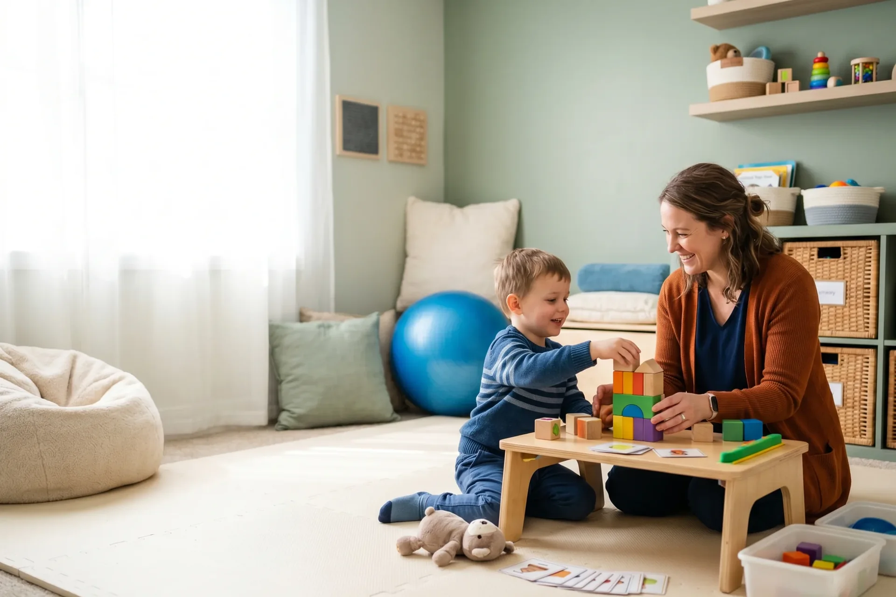
Warm • Modern • Neuro-affirming • Whole-person care
This demo does more than look better. It explains what should change, why it matters, and how the new site becomes a stronger front desk, brochure, resource library, hiring page, and routing system.
We give them tasty niblets: enough strategy to prove we know exactly what we are doing, without handing over the full meal or the recipe.
Service architecture
Modern search and AI reward specific answers. Rise needs clear, individual service pathways instead of one vague brochure-style services area.
Daily routines, sensory processing, emotional regulation, learning, participation, and caregiver strategies.
View pageCommunication, feeding, articulation, language, social communication, and family-centered carryover.
View pageMobility, coordination, strength, gross motor confidence, and active participation.
View pageRegulation support, mental wellness, relational safety, and supportive care planning.
View pageIEP/504 support, school observations, training, sensory room consulting, and community education.
View pageInclusive movement, social connection, teamwork, confidence, and skill-building for all abilities.
View pageSensory-informed space design for homes, schools, daycares, and community environments.
View pageOne “Start Here” path for evaluations, referrals, packet downloads, portal access, and FAQs.
View pageWho we support
Families do not always know whether they need OT, speech, groups, school support, or a consultation. The site should let them start from the path that sounds most like their situation.
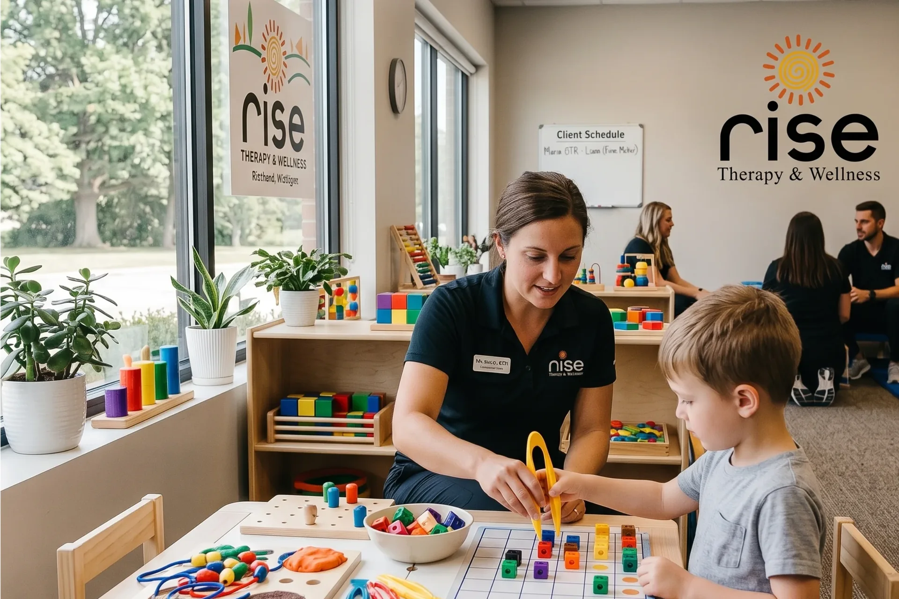
Play, regulation, motor planning, communication, feeding, and participation.
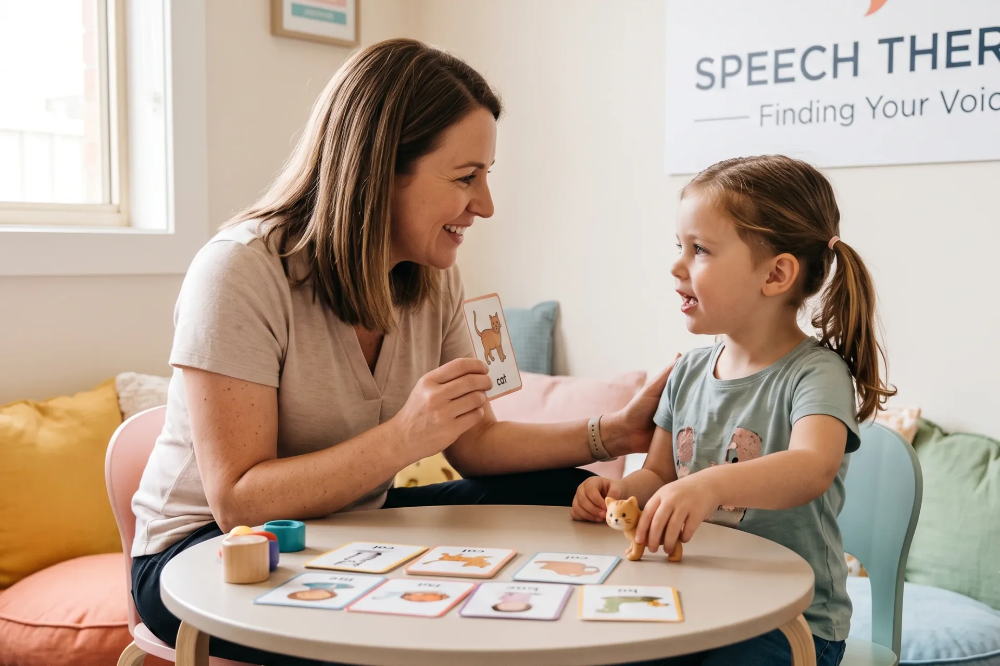
Confidence, independence, executive functioning, emotional regulation, and routines.
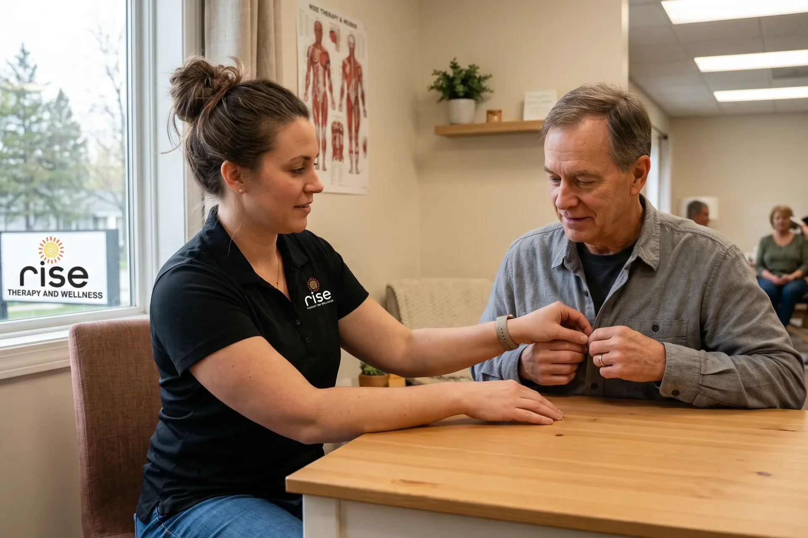
Daily living, wellness, caregiver support, and home/community strategies.
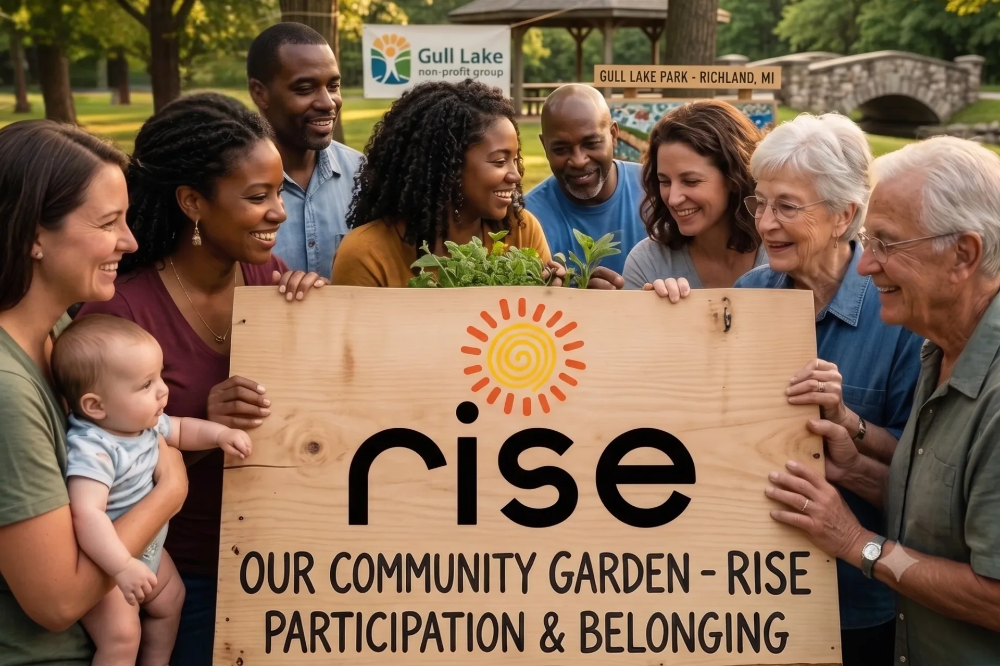
Training, consultation, sensory spaces, IEP/504 support, and inclusive programs.
Recommended rebuild scope
The finished project is not just a better-looking homepage. It is a custom public-site rebuild with CMS, SEO, accessibility, SimplePractice handoff, smart routing, training, and launch support.
Final page list, user journeys, content priorities, portal boundaries, and launch plan.
Homepage, interior page system, mobile layouts, cards, forms, CTAs, and brand-consistent components.
Fast, responsive front-end built for Vercel with clean structure, reusable sections, and optimized assets.
Editable staff, services, resources, events, careers, FAQs, insurance notes, and calls-to-action.
Clear portal links, appointment/request explanations, billing CTAs, and safe clinical workflow boundaries.
General contact, referrals, event/program inquiries, consulting, careers, and internal routing.
Clean URLs, metadata, redirects, sitemap, image optimization, FAQs, and custom medical/service schema.
WCAG 2.2 AA target for core templates, reduced motion planning, labels, contrast, and keyboard support.
Safer by design
Keeping clinical workflows in SimplePractice makes the rebuild more practical, more affordable, faster to launch, and safer from a compliance standpoint.
The public site should explain Rise, guide visitors, publish resources, organize programs, and route inquiries without unnecessarily collecting PHI.
Patient portal, clinical records, billing, telehealth, secure messaging, and PHI-heavy workflows stay inside SimplePractice or another approved healthcare platform.
CMS / easy editing
The rebuild should give approved team members a structured editing system so the website does not become outdated every time a staff member, service, event, or document changes.
Preview CMS conceptEvents + careers
Rise is more than a clinic page. The rebuild should make events, groups, workshops, and hiring easier to understand and easier to manage.
Organize playdates, camps, training dates, parent education, group registration, and community programming in one clean section.
Events pageShow open roles, culture, values, mentorship, resume upload, and why providers should want to work at Rise.
Careers pageSmart routing
The site should act like a better front desk: new clients, existing clients, providers, schools, event participants, and job applicants should not all be pushed through the same generic contact path.
Guided evaluation request, what to expect, insurance info, FAQs, and portal explanation.
Fast handoff to secure portal, billing, appointments, and communication.
Fax number, document instructions, secure upload path if approved, and contact routing.
Rise-Ed, training, observations, sensory rooms, IEP/504 support, and workshops.
Group registration, camps, playdates, workshops, and follow-up communications.
Open roles, culture, values, resume upload, and hiring-specific notifications.
Trust section
Clouds, stars, movement objects, and a light playful feel keep the section friendly while the real reviews do the selling.
“My child really never cared for people. In Mrs Marie Bell my child found her person. Rise is our family! I highly recommend.”
Lolisa.S“Marie goes above and beyond to have a caring relationship with each of my three daughters… helped my children improve with food and clothing sensitivities.”
Annette.C“We love Ms. Marie. She has helped my daughter so much with sensory, managing emotions, and advocating for our family.”
Tanya.P“Marie and Stephany have created a fantastic therapeutic experience. Our son learned lifelong tools to succeed and thrive.”
Brooke.H“Rise Therapy & Wellness helped my progression through multiple injuries. They legitimately care about their customers and patients.”
Joshua.S“They make you feel like you’re part of their family. They genuinely care about the kids and parents.”
Julia.R“Rise is a great place. The therapists are super helpful and did wonderful work with both my sons.”
Tim.B“Great service. The staff is wonderful and they do a great job with my son. He loves it there.”
Dante.P“We love Rise! Great environment, everyone is kind, caring, and supportive. They go above and beyond.”
Autumn.MNew-client flow
The website should act like a better front desk: guiding families, referral partners, and existing clients into the right path without forcing them to hunt through PDFs, portal links, or disconnected forms.
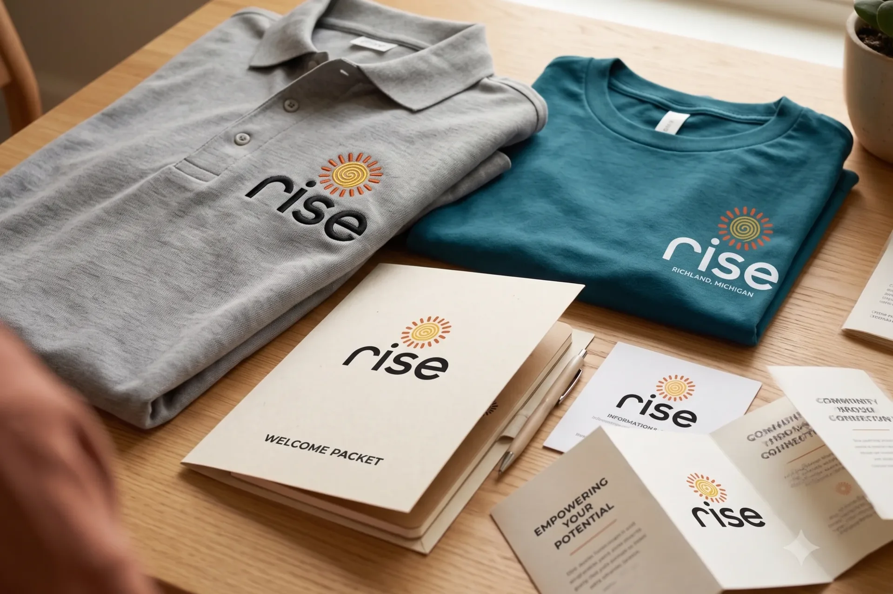
Make the packet easier to scan, easier to download, easier to understand before the first visit, and stronger for SEO/AEO.
Search & AI Strategy
Rise has built an incredible community-centered wellness ecosystem. Now the website needs to help Google, Maps, AI Overview, ChatGPT-style assistants, and local families understand exactly who Rise is and who Rise serves.
Neuro-affirming OT + inclusive youth sports + sensory-informed renovations is highly specialized — exactly the kind of niche modern search can reward.
“Pediatric occupational therapy Kalamazoo,” “neuro-affirming therapist Michigan,” “speech therapy for toddlers near me.”
“Inclusive youth sports Michigan,” “neurodivergent group activities Kalamazoo.”
“Sensory room design Michigan,” “autism friendly home renovations.”
Exact schema for address, specialties, service areas, FAQs, events, providers, and resources.
Rise Therapy is the best-kept secret in the area. Let’s stop relying on a site that just sits there and launch a digital ecosystem that actively connects you with families who need you most.
Launch plan
The proposal becomes easier to trust when the client can see the actual build path from strategy to launch and training.
Goals, sitemap, services, portal boundaries, forms, content owners.
User journeys, page models, new-client flow, content plan.
Homepage, key pages, mobile states, forms, cards, components.
Vercel build, CMS setup, reusable components, routing, staging.
Content cleanup, metadata, redirects, images, sitemap, schema.
Mobile, browsers, forms, accessibility, speed, redirects, accuracy.
DNS/SSL, monitoring, editor training, documentation, care plan.
Success metrics
The finished website should be judged by clarity, conversion, trust, search visibility, accessibility, performance, and operational control.
Visitors understand who Rise helps, what services exist, and how to start.
Contact, referral, portal, event, career, and program paths are easy to find and track.
Outdated content, typos, duplicate staff entries, and sensitive documents are cleaned up.
Important services receive clean URLs, metadata, schema, links, and indexable content.
Core templates are designed and tested toward WCAG 2.2 AA goals.
Images, scripts, mobile layout, lazy loading, and page speed are optimized.
Rise has CMS training, documentation, content ownership, and support.
FAQs, schema, service content, and direct answers help AI systems understand Rise.
Resources + education
Family-centered content that already fits the brand voice and can become stronger SEO/AEO content.
Playdates, workshops, camps, and local connection opportunities that reinforce belonging.
Make first-visit information easier to scan, find, and understand on mobile.
FAQ accordion concept
Provider referrals can be faxed to 269-359-3710. The site should also support a secure upload workflow for referrals and supporting documents.
The welcome packet notes a 60-minute initial evaluation/session, caregiver involvement for clients under 18, a facility tour, and a strengths/concerns discussion.
FAQs create direct answer-style content that helps Google and AI assistants understand and surface Rise for common questions.
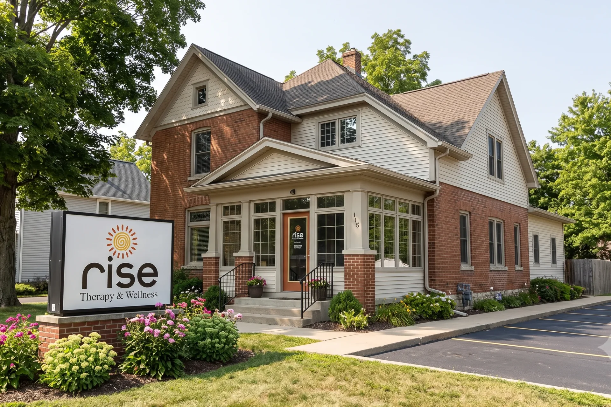
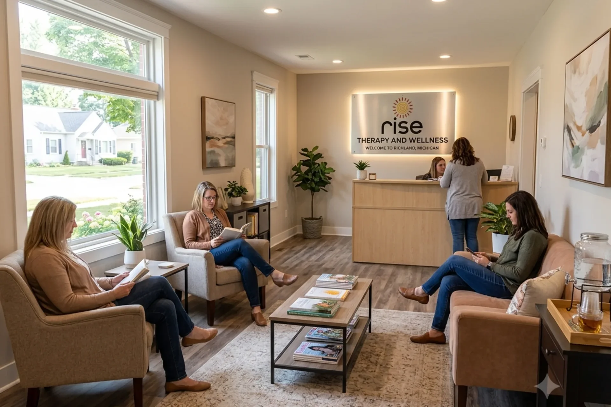
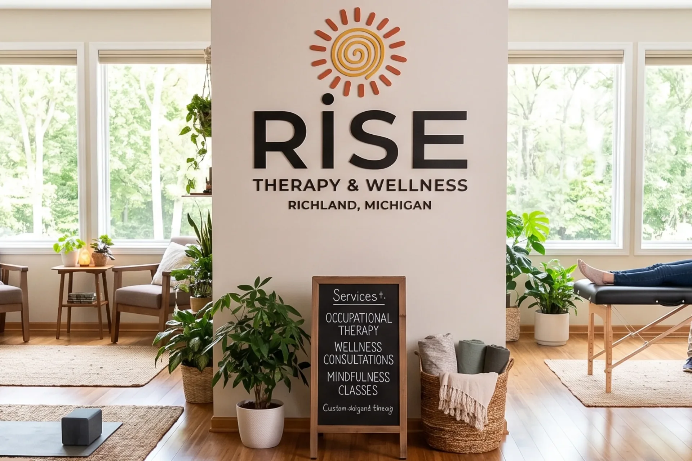
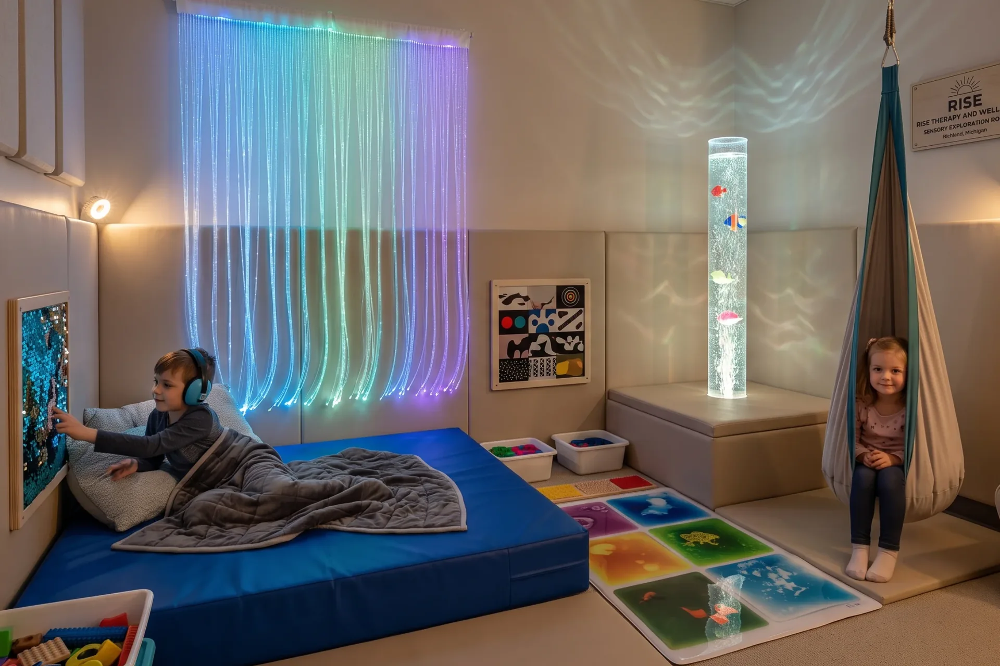
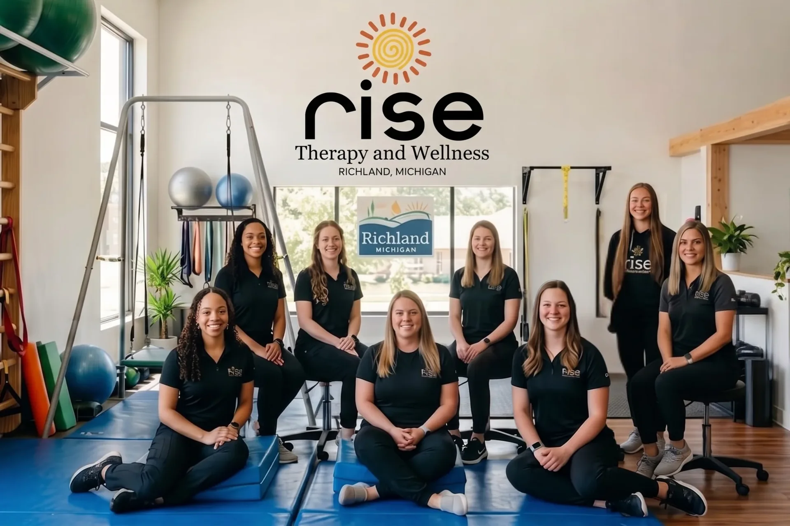
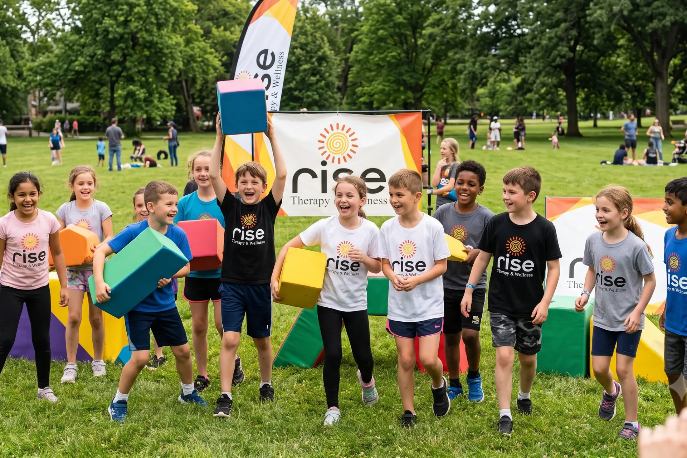
The public prototype can show the three investment paths without exposing exact numbers: Clean Rebuild, Recommended Growth Rebuild, and Advanced Platform Build. If this demo is protected, exact build fees and care-plan pricing can be added directly to this page.
8599 N. 32nd Street, Suite 104
Richland, MI 49083
269-203-7394
connect@risetherapyandwellness.org
Fax: 269-359-3710
Provider referrals may be faxed to the number above.
Already a client?
Place portal access in the header, footer, billing/help page, new-client hub, and post-submit confirmation.
Open Client Portal